When an appointment has been booked in Meddbase following an OH referral, patient attendance for an appointment triggers a series of steps in Meddbase from patient arrival through to consultation. This enables intuitive and comprehensive management of the process and clinical findings during the patient encounter.
In simple terms, the steps can be summarised in the diagram below.

This article will walk you through the stages from arrival through to the consultation in the Case Management workflow; potentially involving both front of house and clinical staff.
When the appointment time comes, and the patient arrives on site (or a remote consultation time is due) a Meddbase user, typically front of house staff, can change the status of the appointment. There are two ways of navigating to the booking from the Start Page:
A) From the ‘Side-by-Side Schedules’ view (Start Page > Clinician schedules or Meddbase name (upper right) > Schedule)
B) From the Patient Record page (Start Page > Find Patient > Patient Record > Appointments)
To do this:-
1. Select the Meddbase icon in the application title bar
2. Select Schedule from the menu (or Start Page > Clinician schedules)
3. Navigate through the Side-by-Side Schedule to find the required appointment
4. Click on the appointment in the schedule (displayed in white)
You are taken to the Appointment Home page where the Patient has arrived option is shown highlighted in green.
On the Appointment Home page there is a range of options available, including amending the booking, taking advance payments, reviewing the patient's documents and more.
From here:
5. Select Patient has arrived
6. In the Are you sure dialogue box that appears, select Yes
The status of the appointment is changed to Patient has arrived and is waiting to be seen.
This step cannot be undone and, depending on the setup, an invoice may be generated at this stage, hence the system confirmation step.
This step also changes the colour of the booking from white to blue and this change is visible for both front of house and the clinician or nurse simultaneously.
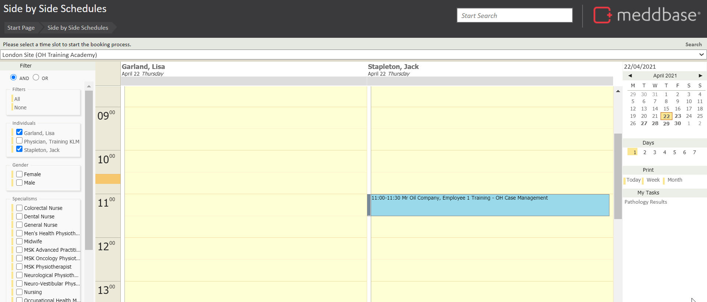
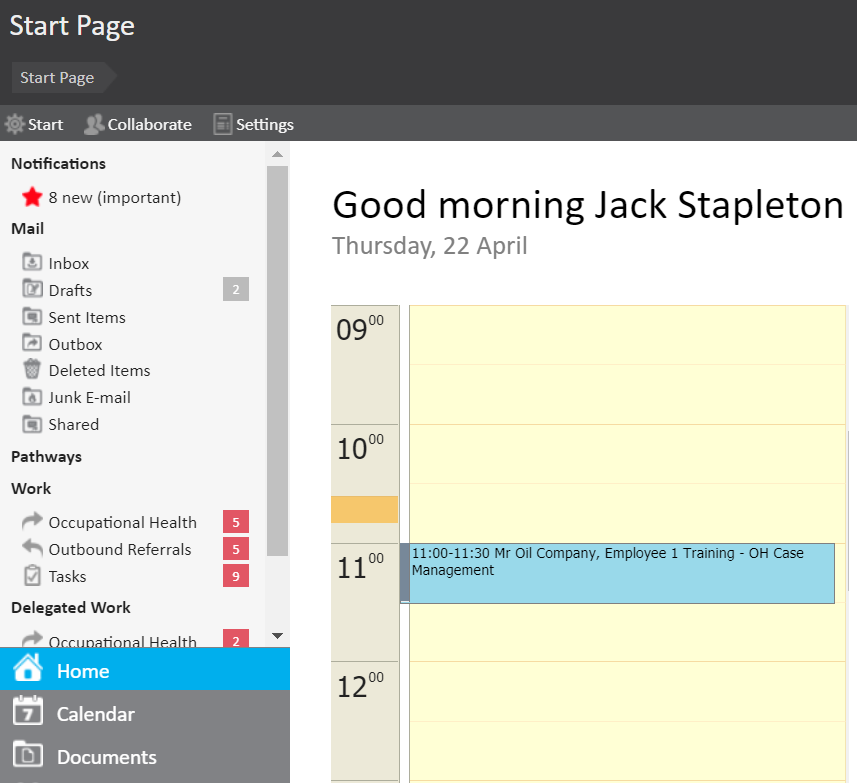
The patient is now waiting, ready to be seen.
The next step in the workflow is to change the status of the appointment status to ‘Patient is being seen’ when the clinician or nurse is ready to see the patient. To do this:-
You are taken to the Appointment Home page.
If you are already in the Appointment Home page, these steps above are not needed.
4. Select Patient is being seen
5. In the Are you sure dialogue box that appears, select Yes
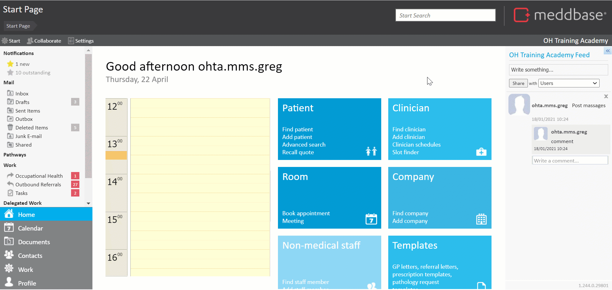
This step is again taken from the Appointment Home page, likely by front of house staff via the Side-by-Side Schedules view. The clinician, however, can also move the appointment forward by navigating to the Appointment Home page and clicking Patient is being seen.
Once confirmed, the appointment status change is reflected by a change of colour of the booking block from blue to green, visible to both front of house staff and the clinician or nurse.
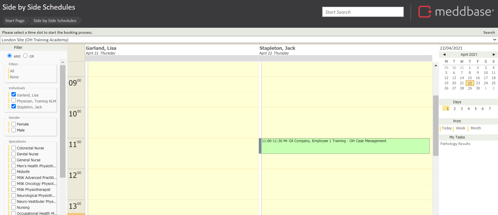
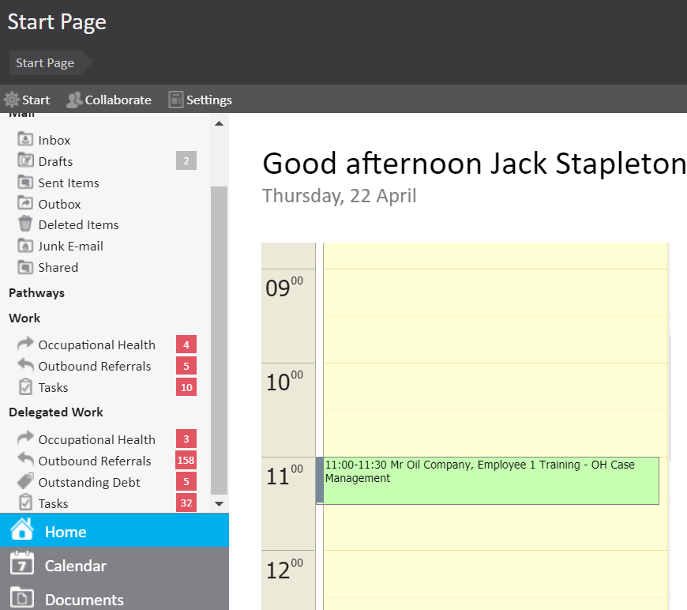
The next step in the workflow is for the clinician or nurse to access the Consultation Suite. To do this:-
This takes the medical user to the Consultation Suite, specifically to the Referral section where the clinician or nurse has a variety of options:
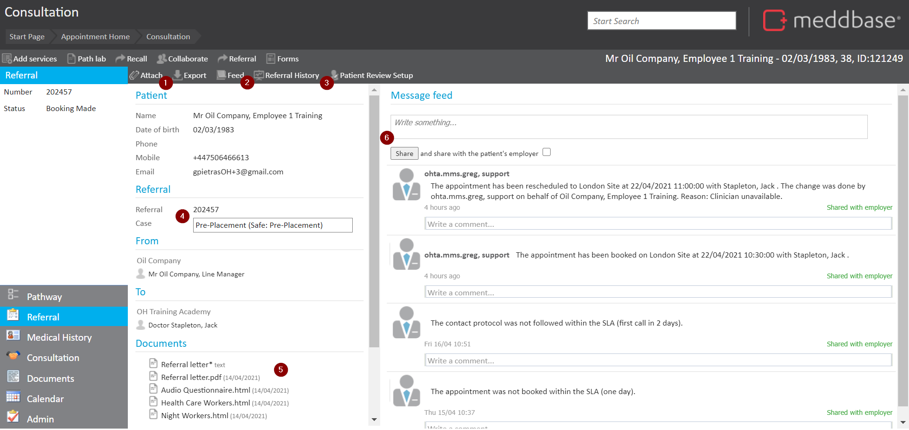
Another option available to the medical user, before commencing the consultation, is to review the patient's medical record, by clicking Medical History in the lower left part of the screen.
The entire medical record can be explored here, information added and specific entries and records investigated*.
*If split medical records are in use via multiple Medical Certificates, the medical record may be delimited based on the medical user's permissions in Admin > Security Policy
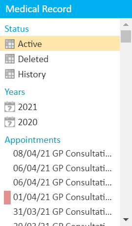
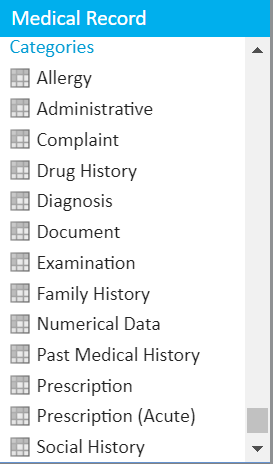
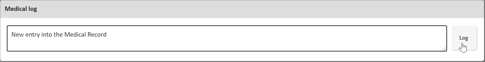
*If this appointment belongs to a Case, the system will automatically filter out and show the user only the information belonging to that Case. To remove the filter and see the entire Medical Record, the user needs to click on the case in the Cases section.
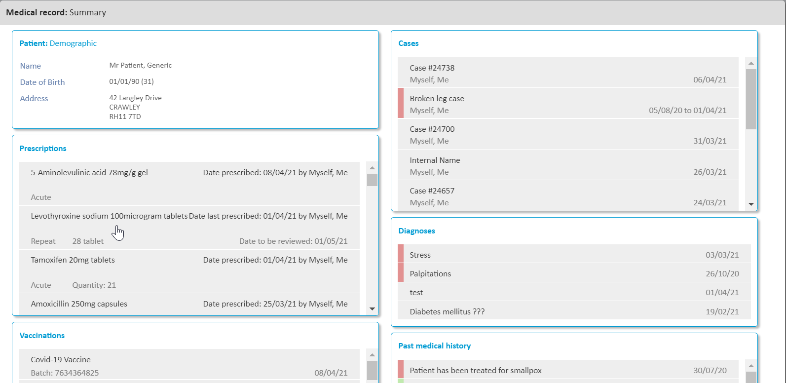
The medical user can scroll down past the Summary section to view the patient's entire medical record in reverse chronological order, apply any of the filters discussed earlier to narrow it down or view the record in an unfiltered manner.
The following information can be viewed:
1. Numerical data* (also available when viewing respective consultation data)
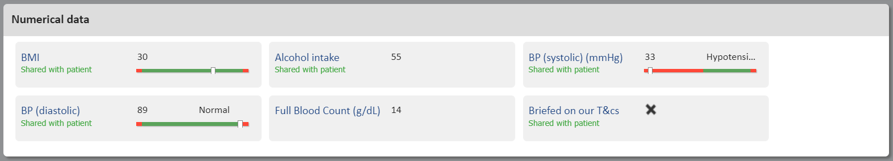
*Custom data fields can be added to the chamber configuration allowing capturing raw data. Click here for a detailed article. The captured values can be shared with the patient via the Patient Portal.
2. Detailed episode information*, incl. documents generated/added during the encounter
*Consultation information include a host of other type of entries e.g. diagnoses, treatments, prescriptions, drug history entries etc. (As mentioned, the medical user can filter the Medical Record by category e.g. only view Acute Prescriptions)**The Patient Portal is an optional feature. In Occupational Health it tends to be used for patient-funded Health & Wellbeing services and giving patient's insight into their Medical Record online.
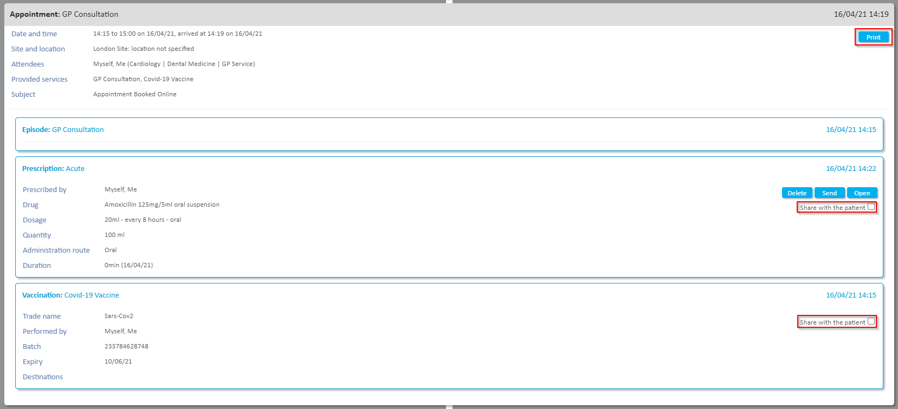
3. Documents and records created/added outside of a consultation
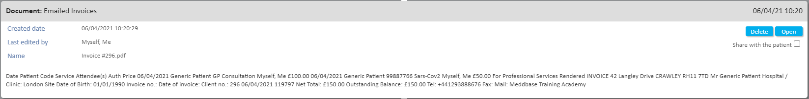
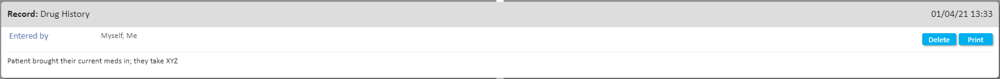
Having reviewed the Medical Record, the medical user can commence the consultation. Please continue to Case Management: Clinical appointment Part 2 - Occupational Health article.